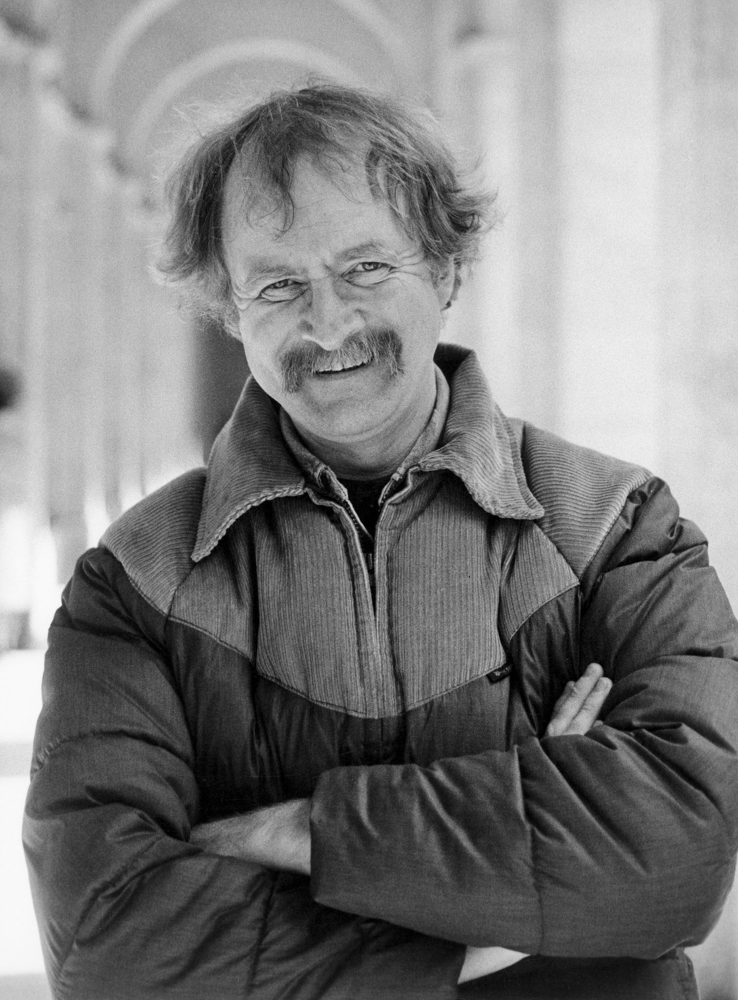

Richard Brautigan was an American poet and writer known for his unique and unconventioanl literary style. He gained popularity
during the 1960s counterculture movement, particularily with his novel:
"Trout Fishing in America", which became his most famous work.
His writing style often combined elements of surrealism, humor, and sadness. This
led to the creation of a distinct and idiosyncratic voice. While
Brautigan achieved significant literary success in his lifetime. He
was plagued with mental illeness. Affecting his later writings and eventually
taking his life.

Home